Кодирование информации · Двоичные деревья · Условие Фано
📖 Открыть теорию к заданию 4 →В задании 4 дан алфавит из нескольких букв, для большинства из которых известны кодовые слова. Требуется найти кодовое слово для определённой буквы (или для нескольких букв), удовлетворяющее условию Фано. Часто дополнительное условие — минимальная длина кодового слова.
Задание решается построением двоичного дерева на листе бумаги. Программное решение нецелесообразно — здесь нужен анализ структуры кодов.
💡 Два типа задания 4:
Алгоритм: строим двоичное дерево до нужного уровня, отмечаем занятые коды и коды, нарушающие условие Фано. Свободные листы — кандидаты для новой буквы. Выбираем кратчайший (или с наименьшим/наибольшим числовым значением — по условию).
Формулировка: «По каналу связи передаются сообщения, содержащие только десять букв: А, B, C, D, E, F, S, X, Y, Z. Для кодирования используется неравномерный двоичный код. Укажите кратчайшее кодовое слово для буквы B, при котором код удовлетворяет условию Фано. Если таких кодов несколько, укажите код с наименьшим числовым значением.»
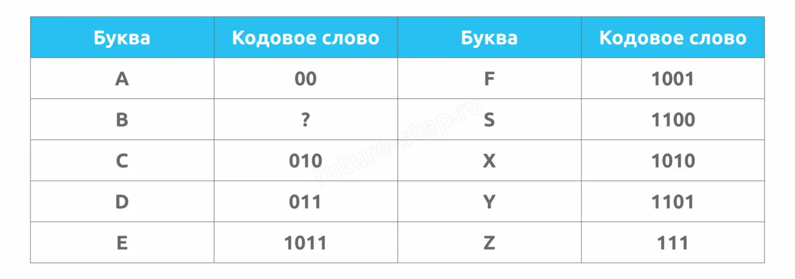
1 Анализируем таблицу: больше всего кодов на «правой» стороне дерева, максимальный уровень — четвёртый. Строим дерево до 3-го уровня слева и до 4-го справа.
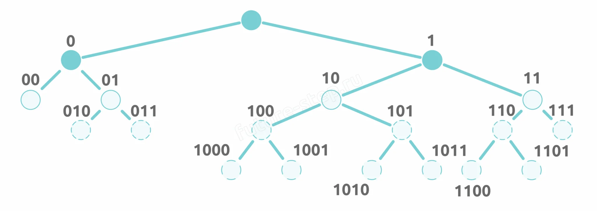
2 Отмечаем занятые коды из таблицы.
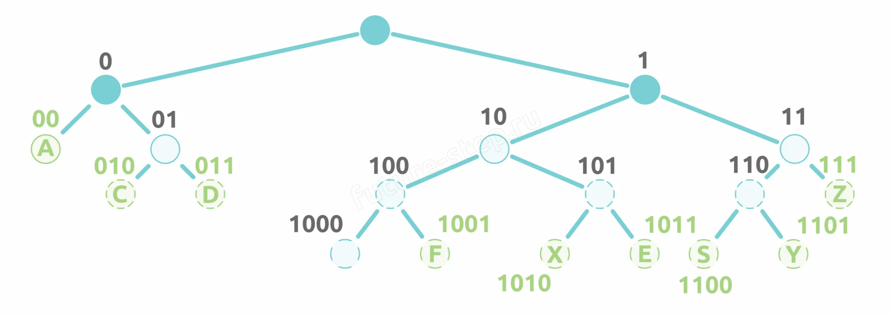
3 Свободен только один лист — с кодом 1000. На него и помещаем букву B.
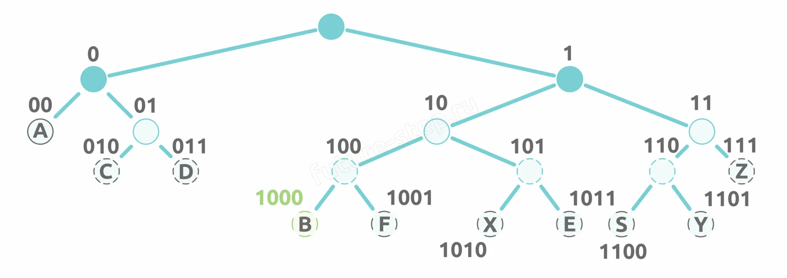
Формулировка: «Укажите кратчайшее кодовое слово для буквы А, при котором код удовлетворяет условию Фано. Если таких кодов несколько, укажите код с наименьшим числовым значением.»
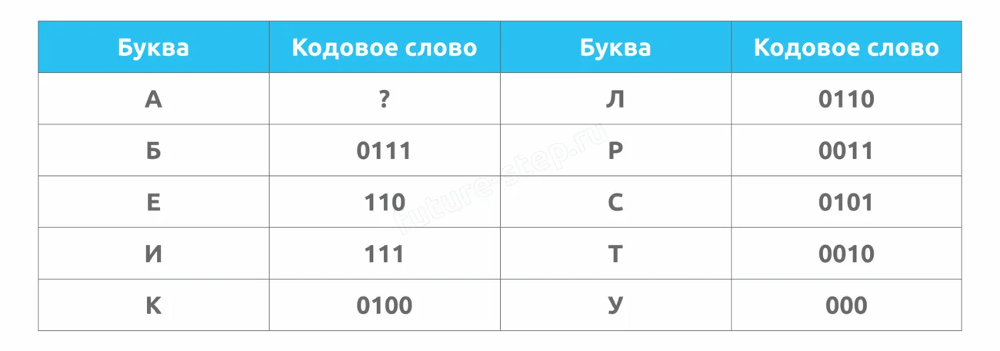
Больше узлов на левой «нулевой» части. Строим дерево до 4-го уровня, отмечаем занятые коды. Свободен лист 10.
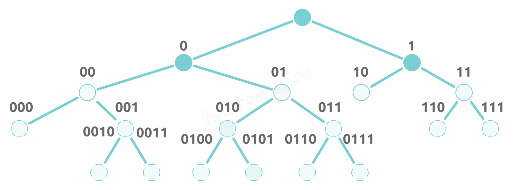
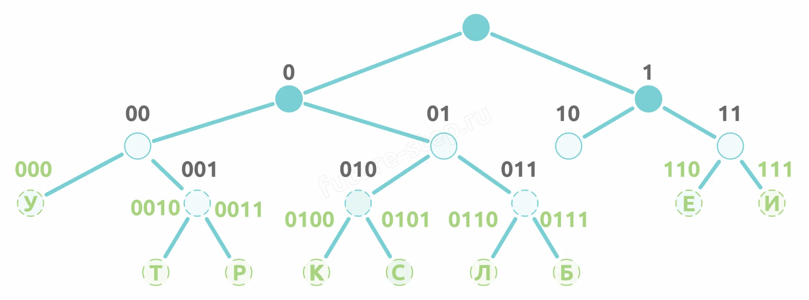
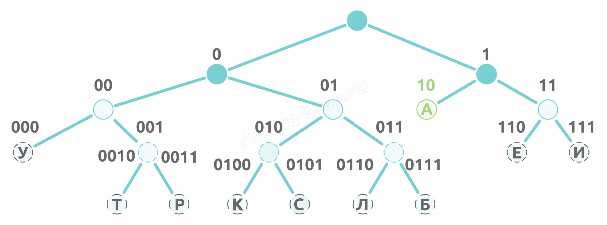
Формулировка: «Для букв А, Б, В используются кодовые слова: А – 0; Б – 1100; В – 1000. Укажите кратчайшее кодовое слово для буквы Г, при котором код допускает однозначное декодирование. Если таких слов несколько, укажите код с наибольшим числовым значением.»
Слева только код 0 (буква А). Справа строим дерево до 4-го уровня. Отмечаем занятые коды (Б — 1100, В — 1000) и коды, нарушающие условие Фано. Свободны листы 101 и 111. По условию выбираем наибольший — 111.
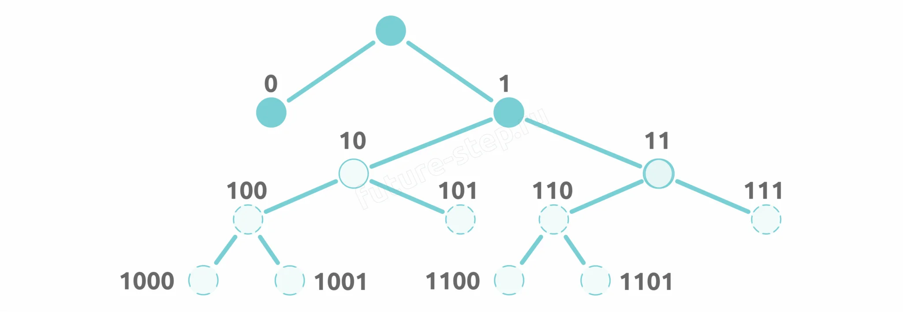
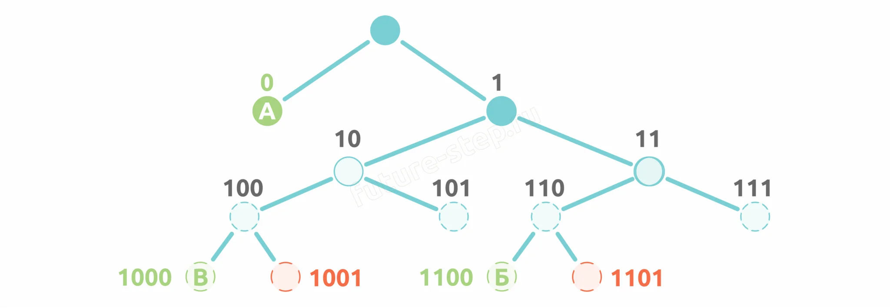
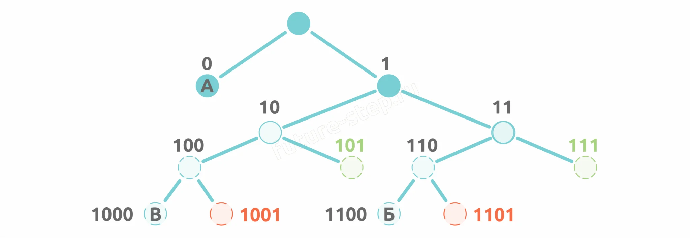
Здесь нужно не просто найти код для одной буквы, а подобрать коды для нескольких букв так, чтобы закодированное слово имело минимальную длину. Правило: чем чаще буква встречается в слове, тем короче должен быть её код.
Формулировка: «Кодовые слова известны: Б – 1001, К – 11. Для букв Л, Н, О кодовые слова неизвестны. Какое наименьшее количество двоичных знаков требуется для кодирования слова КОЛОКОЛ?»
1 Считаем частоту букв в слове КОЛОКОЛ: К — 2, О — 3, Л — 2. Буква О самая частая — ей нужен самый короткий код.
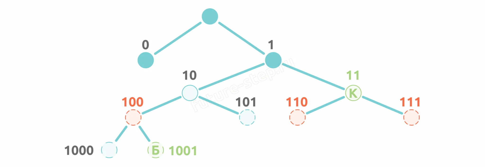
2 Свободны листы: 0 (самый короткий), 101 и 1000. Самый короткий (0) отдаём букве О. Букве Л даём 101 (покороче), букве Н — оставшийся 1000.
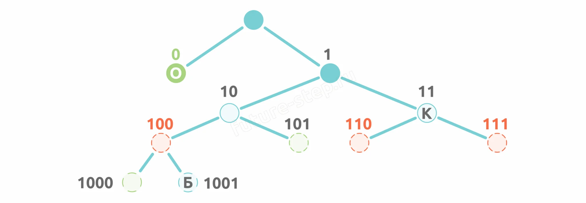
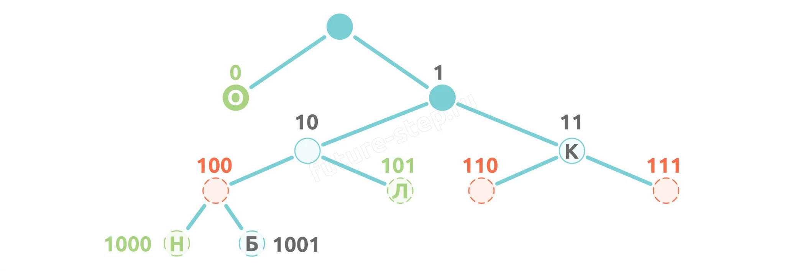
3 Считаем длину слова КОЛОКОЛ:
Формулировка: «Кодовые слова известны: Б – 10, Н – 110, Р – 000. Для букв К и О кодовые слова неизвестны. Какое количество двоичных знаков требуется для кодирования слова КОРОБОК минимально возможным количеством знаков?»
Частоты: К — 2, О — 3, Р — 1, Б — 1. Строим дерево, отмечаем занятые коды. Свободны листы: 01, 001, 111. Самый короткий (01) — букве О. Для К выбираем любой из оставшихся (оба по 3 бита), например 111.
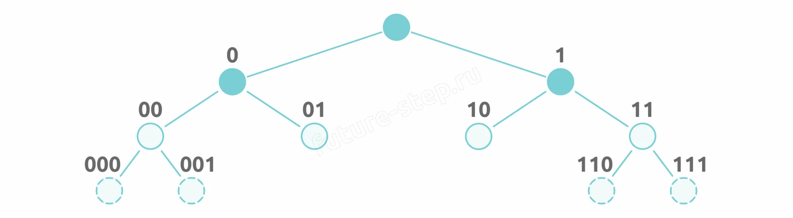
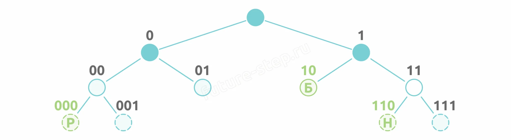
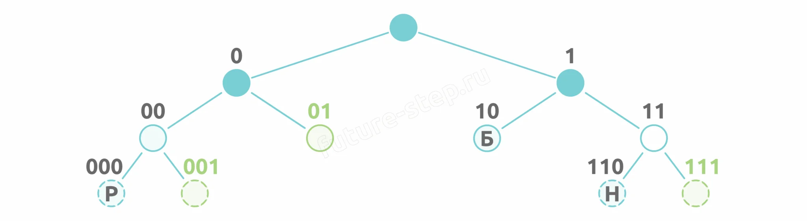
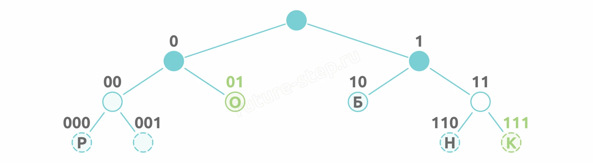
Формулировка: «Кодовые слова известны: В – 1, М – 001. Для букв Е, Н, Р кодовые слова неизвестны. Какое количество двоичных знаков потребуется для кодирования слова ВЕРМЕЕР минимально возможным количеством знаков?»
Частоты: В — 1, Е — 3, Р — 2, М — 1. Правую ветку не строим — там только код 1 (буква В). Строим только «нулевую» часть.
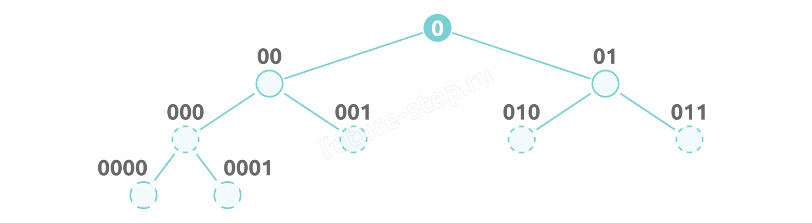
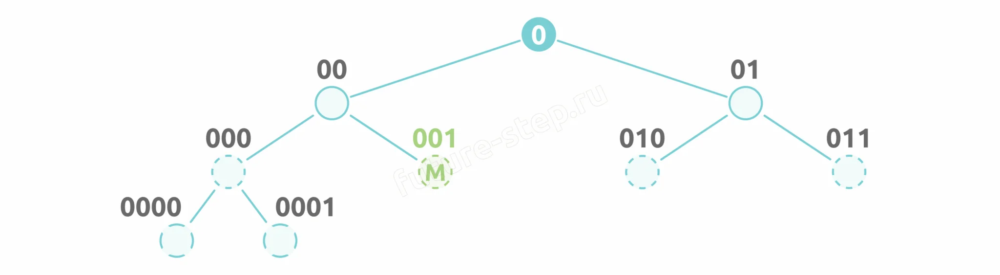
Свободны 6 листов. Но одновременно занять можно либо «01» + «0000» + «0001», либо «010» + «011» + «000».
Вариант 1: Е → «01» (2 бита), Р → «0001» (4 бита), Н → «0000» (4 бита).
Длина для Е и Р: 2×3 + 4×2 = 14.
Вариант 2: Е → «010» (3 бита), Р → «011» (3 бита).
Длина для Е и Р: 3×3 + 3×2 = 15.
Выбираем вариант 1 — он короче.
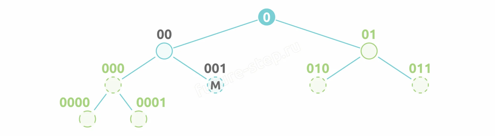
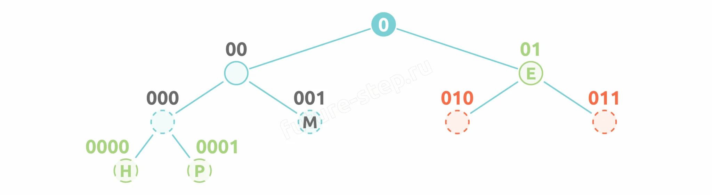
Материалы для самостоятельной практики появятся здесь позже.
Здесь будут размещены реальные варианты заданий для отработки навыков.